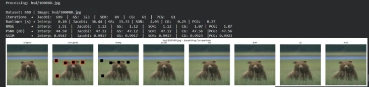

Project
Image Reconstruction Using Interpolation, PDE-Based Inpainting, and Optimization-Based Solvers
Image processing project, IIUC.

A classical, non-ML pipeline that fills corrupted image regions using fast interpolation, PDE-based harmonic inpainting and Krylov solvers. Across 15 test images, Conjugate Gradient methods gave the sharpest results in about 62 iterations, against about 710 for Jacobi.
Missing regions are first filled with a fast interpolation pass, then refined by harmonic inpainting solved with Jacobi, Gauss-Seidel and SOR iterations, and finally by Krylov subspace optimization with Conjugate Gradient and Preconditioned CG.
Evaluated on 15 images across three datasets, CG and PCG produced the sharpest reconstructions, reaching an SSIM of about 0.986.
- Image Inpainting
- Numerical Methods
- PDE Solvers